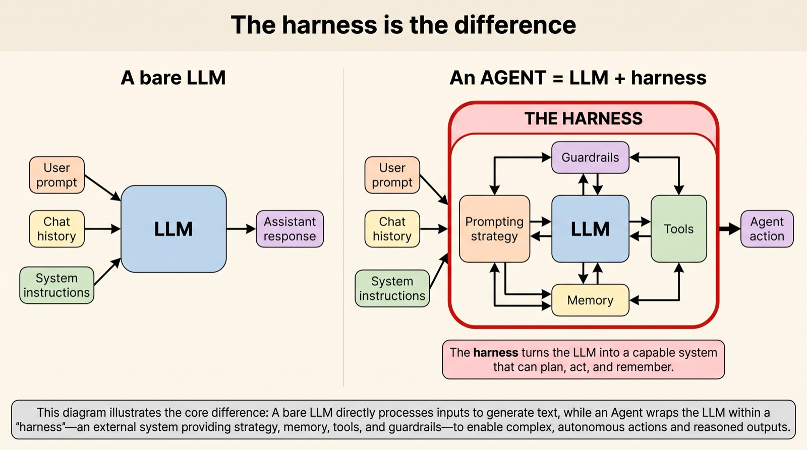
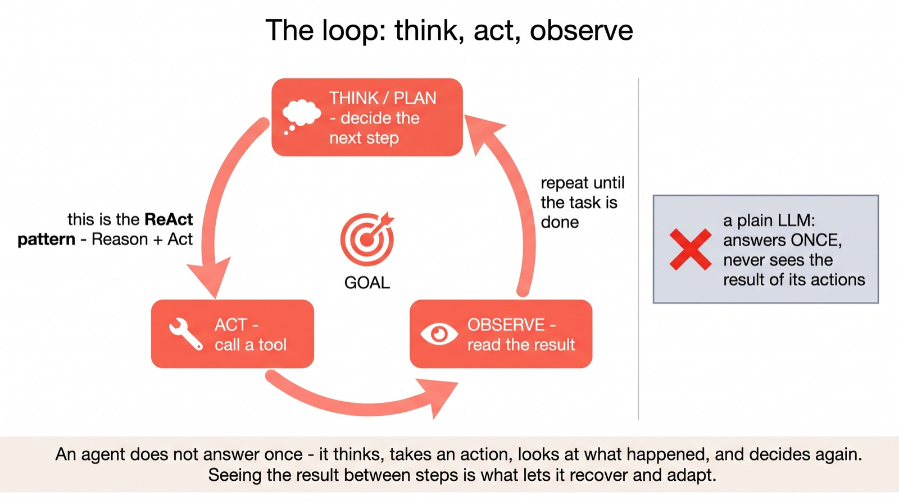
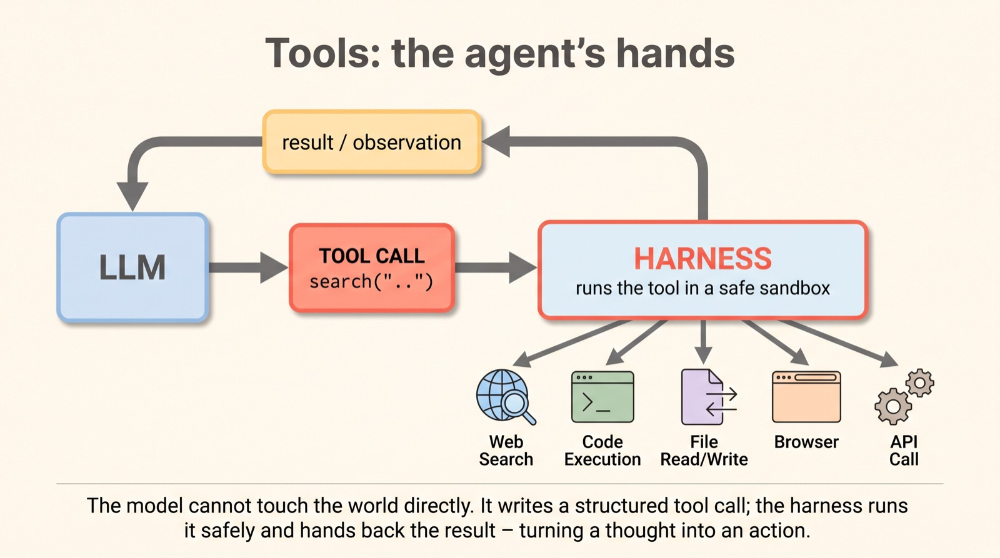
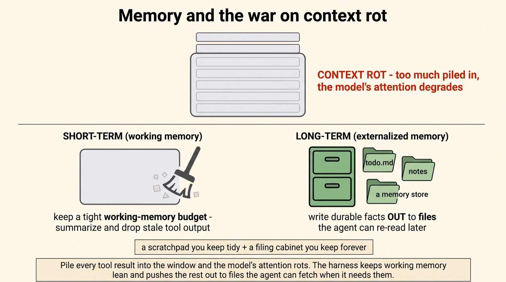
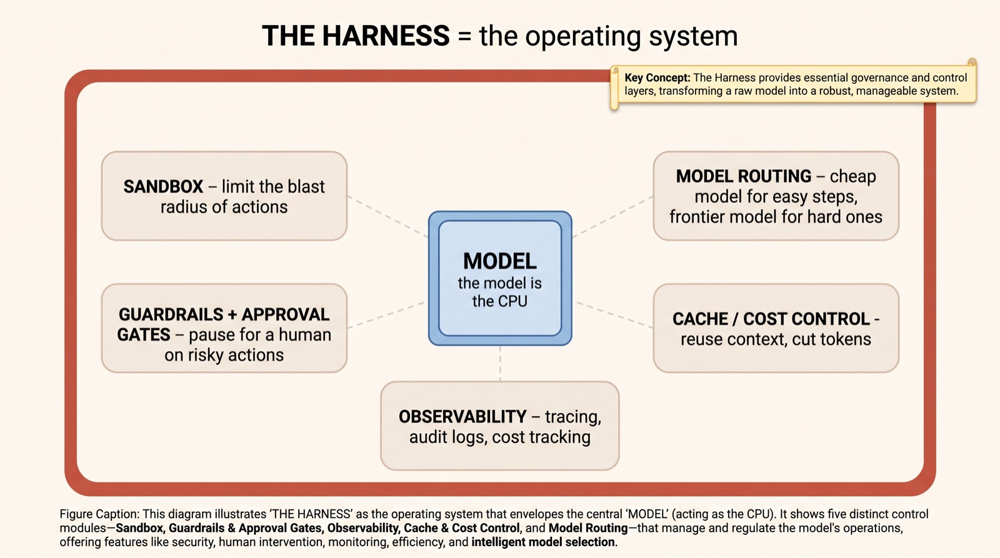
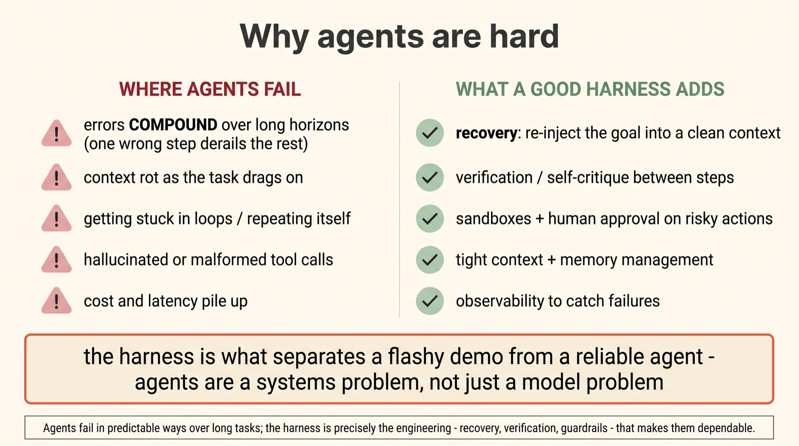

Agent harnesses: the scaffolding that turns an LLM into a doer
The loop that
makes an agent
2026 is the year "the model" stopped being the whole story. The most capable AI systems you use now aren't a single clever answer — they're an agent: a model running in a loop, calling tools, keeping notes, and recovering from its own mistakes. The thing that makes that possible has a name — the harness — and a quiet truth: most of the engineering lives there, not in the model.
An "agent harness" is the runtime layer wrapped around a language model — built, in the 2026 consensus, from four parts: a loop, a tool interface, context management, and control. It's the difference between a model that answers a question and one that books the flight, fixes the bug, or runs the research. We'll build the picture piece by piece.
Scroll to begin.
↓
The harness is the difference
A language model, on its own, does exactly one thing: you give it text, it gives you text back. That's it. It can't search the web, run code, open a file, or check whether what it just said was true. It is a brilliant one-shot guesser — and a one-shot guesser, however brilliant, is not an agent.
An agent is what you get when you wrap that model in scaffolding that lets it act — and then loop. Give it a way to take actions, a way to see the results, a memory to track what it's doing, and rules to keep it safe, and suddenly the same model can carry out a multi-step task in the real world. That wrapper has a name: the harness.

Here's the part that surprises people new to the field. We talk endlessly about which model is best, but the gap between a flaky agent demo and a dependable one usually isn't the model at all — it's the harness around it. As the people building these systems like to put it: most agent engineering happens in the harness, not the model. So let's take it apart. It has four pieces.
The loop: think, act, observe
The first and most important piece is the loop. A normal model call is a straight line: question in, answer out, done. An agent replaces that line with a cycle. It thinks about what to do next, takes an action, observes what happened — and then goes back to thinking, now wiser for having seen the result. Round and round until the task is finished.
This is the famous ReAct pattern — short for Reason + Act — and the magic is entirely in the "observe." A model that answers once is flying blind; it commits to a whole plan before seeing whether step one even worked. A model in the loop gets a feedback signal between every move. It can notice a failed command, a wrong turn, an unexpected result — and adjust. That single difference is what turns reasoning into doing.

It sounds almost too simple to matter, but the loop is the spine of every agent. Everything else — the tools, the memory, the safety rails — exists to make each turn of this cycle smarter and safer. Speaking of which: what exactly is the agent acting with?
Tools: the agent's hands
The model can think, but it can't touch anything. To actually do work it needs tools — and tools are the second piece of the harness. A tool is any action the agent can take: searching the web, running code, reading and writing files, browsing a page, calling an API.
The mechanism is cleaner than it sounds. The model doesn't run the tool itself; it just asks for it. It emits a small, structured tool call — the digital equivalent of "please run search('flights to Tokyo')" — and the harness takes over: it runs that tool, safely, and hands the result back into the loop as a fresh observation. Thought goes out as a request; action comes back as a result.

This indirection is also where safety begins. Because the harness — not the model — is the thing that actually executes, it can run tools inside a sandbox, refuse dangerous ones, and pause for a human before anything irreversible. The model proposes; the harness disposes. But give an agent tools and let it run for a while, and a new problem appears — one of memory.
Memory and the war on context rot
Every turn of the loop dumps more into the model's context window: the last thought, the tool call, and — often the biggest culprit — the tool's output, which can be a giant wall of text. Let that pile up over a long task and you hit a wall we've met before in this series: context rot, where a stuffed window quietly degrades the model's ability to attend to what matters.
Managing this is the harness's third job, and it splits memory in two. Short-term memory is the working context — and the harness keeps it lean, summarising and pruning stale tool output so the window stays sharp. Long-term memory lives outside the window entirely: the harness writes durable facts out to files — a running todo.md, notes, a memory store — that the agent can re-read on demand. A tidy scratchpad for now; a filing cabinet for everything else.

The control plane
Loop, tools, memory — three pieces down. The fourth is the least glamorous and, for real deployments, the most important: control. An agent that can run code and call APIs on your behalf is powerful and, unsupervised, a little terrifying. The control layer is what makes it trustworthy.
This is why people have started calling the harness an operating system for the model — the model is the CPU, the harness is the OS around it. It runs actions inside sandboxes to limit the blast radius of a mistake; it enforces guardrails and approval gates, pausing for a human before anything risky; it provides observability — tracing, logs, cost tracking — so you can see what the agent did and why; and it can route each step to a different model, sending easy steps to a cheap one and hard reasoning to a frontier one.

Why agents are hard
It's worth being honest about why, despite the hype, reliable agents are still genuinely hard to build — because the difficulties are exactly what the harness exists to fight. The core enemy is the long horizon. Over a hundred-step task, small errors compound: one wrong turn early, uncorrected, can quietly derail everything after it.
The failure modes are by now familiar to anyone who's built one. Context rots as the task drags on. Agents get stuck in loops, repeating themselves. They hallucinate tool calls or malform them. Costs and latency creep up with every extra turn. None of these are solved by a smarter model alone — they're systems problems, and the harness is the system. A good one adds recovery (re-injecting the original goal into a freshly cleaned context when the agent drifts), verification between steps, sandboxes and approval gates, and the observability to catch trouble early.

This is the real reason "the harness is the difference" isn't a slogan. Two teams can use the identical frontier model and ship wildly different agents, because one invested in the loop, the memory and the guardrails — and the other just called the model in a while loop and hoped.
Why this matters
For a few years the entire AI story was a story about models — bigger, smarter, the next checkpoint. Agent harnesses mark the moment that story changed. The frontier didn't stop moving, but a second frontier opened up around the model: the engineering of the system that lets it act in the world reliably.
That's why "agent" became the word of 2026. The thing that books your travel, refactors your codebase, or runs a research task overnight isn't a new model so much as a familiar model placed inside a much better harness — one that loops carefully, uses tools safely, manages its own memory, and knows when to stop and ask. The intelligence was already there; the harness is what finally let it do something with it.
So the shift to keep is this. When you hear that an AI can now act, don't picture a smarter brain — picture a good brain finally given hands, a memory, and a careful set of rules. In 2026, that scaffolding is where much of the real progress is being made — and it's the least glamorous, most consequential engineering in the field.